一直都是 Sublime 的死忠，只因我是一个追逐风的男子，特别嫌弃老牛烂车。但自从系统升级到 win10 以及 WebStorm 发布 11.0.3 版之后，我一刷以前对 WebStorm “卡、慢”的印象，反而变得对 WebStorm 钟爱有加了。现在的 WebStorm 比以前快很多了（当然一方面还要感谢 win10），尽管比起全副武装的 Sublime 还是要慢，不过和 Atom 比却快很多（这点增色不少）。特别是当需要构建大型工程的时候，不得不承认 WebStorm 和 Sublime 比有过之而无不及。
言归正传，下面让我们一步一步来打造自己专属的 WebStorm 工作流。
安装工具
建议大家所有的开发工具都用官网原版的，上 JetBrains 官网去下载一个最新的 WebStorm 吧，现在最新版是 2016.1，已经支持 Angular 2 和 TypeScript。如果资金充裕的的话，建议还是购买正版吧，否则可以通过 License Server 来激活（感谢 InteliJ IDEA 开源社区）。
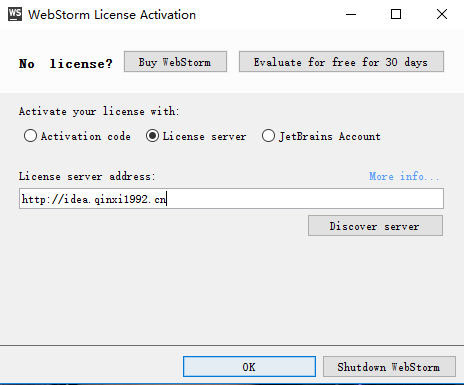
开箱即用
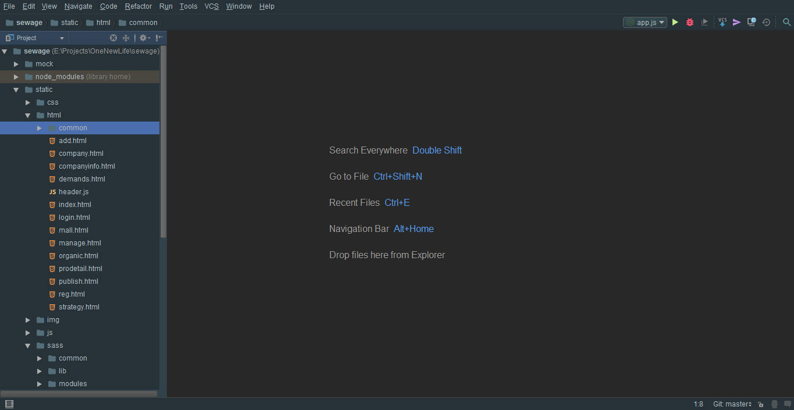
首先主界面长这个样子，设置在 File 里面（而不是常规的 Help），快捷键 ctrl + alt + s 可以快速打开设置界面，有时想快速查找一些细微的设置可以在上方的搜索框快速搜索。还有一个更简单粗暴的搜索方法就是双击 shift 就可以随心搜索你想要的东西。左下角的小电脑是一个集成工具按钮，里面有诸如 Terminal、Gulp 和 NPM 等众多常用工具和命令行。
定制界面
这里不得不吐槽一下 Jetbrains 的主题，和 Sublime 一比简直就是东施效颦。还好现在有 Material UI 了，不然 JetBrains 家族真的要遗(一)臭(丑)万年了。
首先是黑色的界面，我相信没有哪个程序员不是黑色控，在 Appearance 选择 Theme: Darcula。
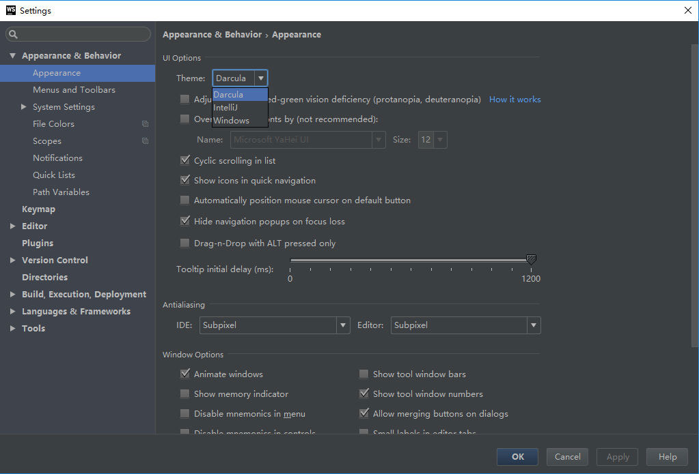
然后找到 Plugins，点击 Browse Respositories，然后搜索 Material Theme UI，在右边点击 Install，等安装完之后重启 WebStorm。
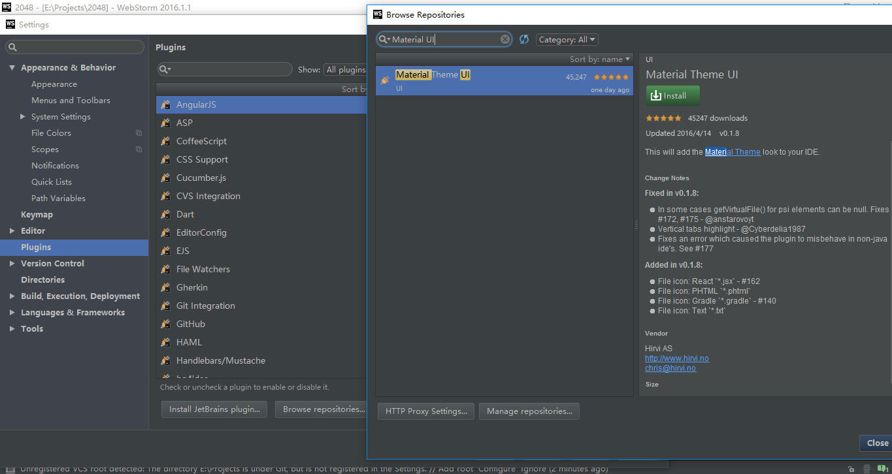
最后在 Font 那里选择 Scheme: Material Theme - Darker，重命名，Primary font 选择 windows 下最好看的 Consolas，大小 16px，行高 1.6 就 ok 了。
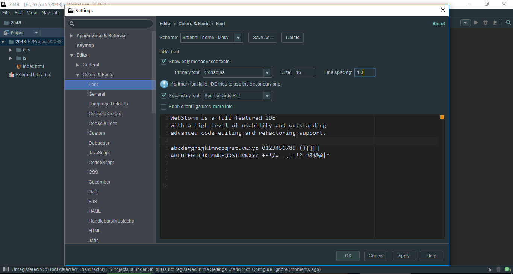
环境配置
首先是版本控制工具的配置，现在前端开发是绝对少不了 Git 和 Github 的了。打开 Version Control，找到 Git，配置文件为你 Git 安装目录的 bin 目录下的 git.exe。点击 Test 测试通过即可。而 Github 的配置只需要验证用户名和密码。
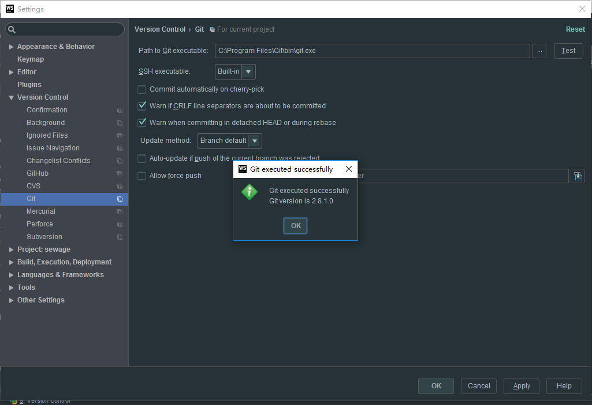
配置好 Git 之后你就可以使用 WebStorm 很强大的版本控制功能了。这时候打开前面我们提及的左下角的工具栏，找到 Version Control 窗口（或者点击右上方带时钟的那个小电脑就可以打开提交历史纪录），在这里你可以看到你仓库所有的历史版本。其实，WebStorm 自身已经集成一个版本管理工具，就是上方工具栏那个 VCS，查看 local history，你会发现你的每一次文件更改都记录下来了。如果有一天你被 Git 玩坏了，它或许可以打救你。
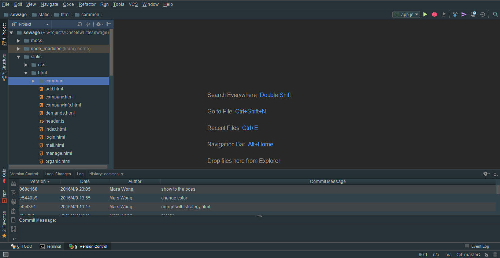
如果你仅仅用来查看 history 的话，真的是大材小用了。WebStorm 的 VCS 比其它工具强大的地方是 diff。双击你仓库的其中一个版本，会弹出一个窗口显示你这个版本有改动的文件，再双击你想查看的文件就可以弹出如下图所示的 diff 界面。diff 界面左侧的色块就是你改动的位置，如果你觉得不清晰的话，利用上方工具栏的那两个小箭头可以帮助你快速定位到改动的位置，然后工具栏右边数过来第四个工具还可以帮你用栅栏圈出改动范围。
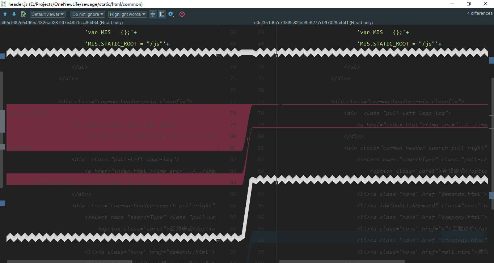
接着就是我们强大的 Node 和 NPM 的配置了。在设置界面找到 Node.js and NPM，配置的文件是 Node 安装目录下面的 node.exe。然后点击 Packages 窗口右边那个绿色的加号就可以安装你需要的包了。当你的包有更新的时候，列表会有蓝色的箭头提醒你。到这里还没完，记得到 Libraries 里面把 Node.js Core 勾上，不然你的 Node 没法用。
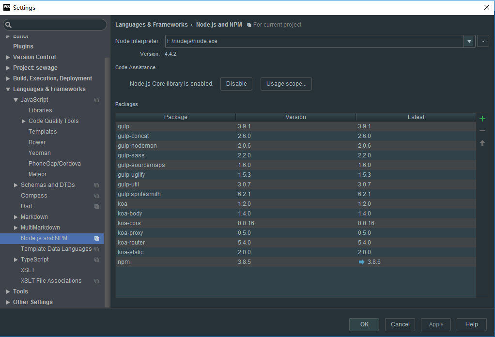
现在 Node 环境配好了，怎样实现自动化构建？只需要配置好你项目的 app.js。在上方工具栏 Run 里面打开 Edit Configurations，点击绿色的小加号，选择 Node.js，然后只需要再配好 Working Directory 和 Javascript file 就 ok 了。其中，Working directory 是你项目的根路径，Javascript file 就是 app.js。这样你的项目就已经构建好了。如果你有需要用到 CoffeeScript 的话，则还要额外配置一下你 CoffeeScript 安装目录下的 bin 目录里面的 coffee 文件。
下面启动项目的方式就好多了，你可以直接 alt + shift + F10，或者打开左下方的 npm 工具，双击 start 就可以了。
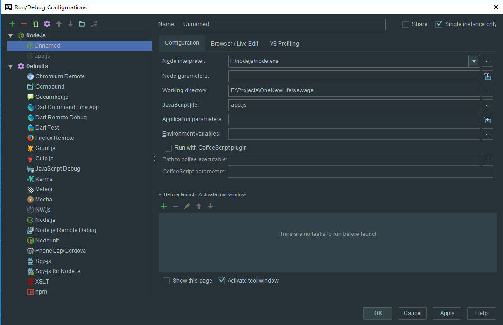
集成 Terminal、重构和代码风格
Terminal 是一个很强大工具，现在我想告诉你，其实你完全可以用命令行来取代工具栏，只需要配好 Git 和 Node 的环境变量就，打开你的 Terminal 窗口就可以随心所欲了。但是，Terminal 的可视化效果还是很差，所以你很多时候还是要用到 WebStorm 内置的图形化工具。
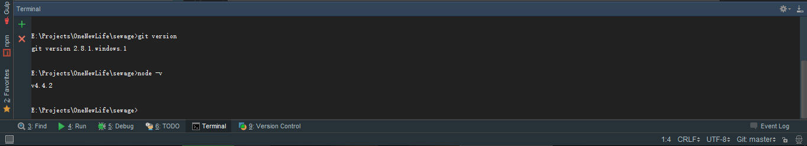
重构也是 WebStorm 里面很强大的一个功能，重构功能要归功于 JetBrains 强大的文件索引系统。WebStorm 的重构就有如你可以在谷歌地图上找到你家的房顶一样。右击你的变量、文件，选择 Refactor（或者选中之后直接按下 shift + F6），然后会弹出重构功能窗口，修改你原来的内容，点击 Preview，下方的控制台会显示你引用到的地方，点击 Do Refactor 即可一键重构，这对于大工程来说无疑就是神技。
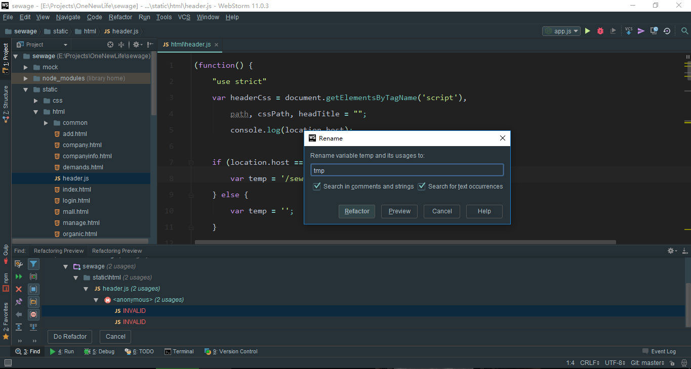
最后一个也是 WebStorm 最强大的地方——代码静态检测。WebStorm 健全的函数提示、代码补全、语法检查、显示代码框架等等技能真的太强大了。你只需要 ctrl + click 就可以得到很多惊喜。还有的就是代码风格的问题。在团队协作的 时候我们都需要约定代码规范（这个事情通常老大会干，小白莫慌），你只需要找到 Code Style，点击 Import，将老大写好的 .jscssrc 文件导进来就 ok 了。
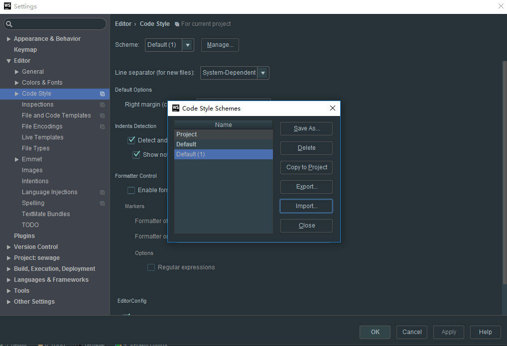
到这里，你已经成功打造好你专属的工作流了，high 起来 o(^▽^)o